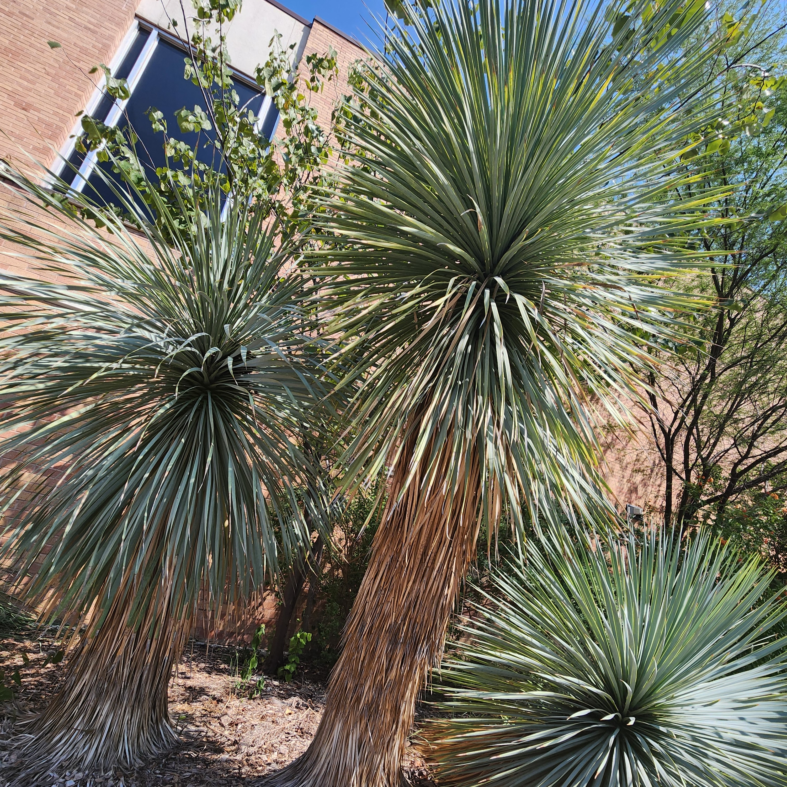

Beaked Yucca

Beaked yucca are hardy in both cold and hot environments. Their edible fruit offers some support for animals as well.
Scientific Name: placeholder
Lifespan: placeholder
Native to: placeholder